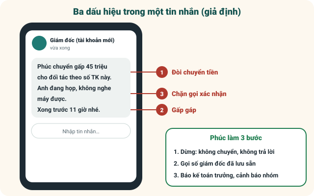

K10 · Năng lực số, AI và quy tắc nơi làm việc › Bậc 2 Bắt đầu
Nhận ra email, tin nhắn lừa đảo thường gặp khi đi làm
Cập nhật lần cuối: 14/11/2026. Chiêu lừa đảo thay đổi liên tục. Bài dạy cách nhận ra dấu hiệu chung, không liệt kê từng chiêu. Trang tinnhiemmang.vn do Trung tâm An ninh mạng Quốc gia vận hành (kiểm tra ngày 14/11/2026). Bài không tư vấn pháp lý.
1. Mục tiêu
- Chỉ ra ít nhất 2 dấu hiệu lừa đảo trong email hoặc tin nhắn công việc.
- Xử lý theo 3 bước: dừng, kiểm tra qua kênh khác, báo đúng người.
2. Khởi động truy xuất
- Ba thói quen giữ tài khoản là gì?
- Vì sao ai hỏi mã OTP thì gần như chắc chắn là lừa đảo?
Đáp án
- Mật khẩu dài, mỗi nơi một mật khẩu; bật xác thực hai lớp; không đưa mật khẩu, OTP cho ai.
- Vì OTP là chìa khóa cuối cùng để vào tài khoản hoặc chuyển tiền.
Xem lại: Giữ mật khẩu và thông tin cá nhân.
3. Giải thích
Kẻ lừa đảo thường không phá máy tính. Họ lừa người dùng tự mở cửa: bấm vào đường link, gửi mật khẩu, chuyển tiền. Người mới đi làm dễ bị nhắm tới, vì chưa quen quy trình và ngại hỏi.
Năm dấu hiệu thường gặp:
Năm dấu hiệu của tin nhắn lừa đảo
- Gấp gáp"Trong 30 phút", "tài khoản sẽ bị khóa", "sếp cần ngay".
- Xin thứ bí mậtMật khẩu, mã OTP, ảnh căn cước, ảnh thẻ ngân hàng.
- Đòi chuyển tiền hoặc đổi số tài khoảnNhất là khi bỏ qua quy trình duyệt thông thường.
- Địa chỉ gần giốngTên miền thêm chữ, đổi đuôi, hoặc sai một ký tự so với trang thật.
- Giả danh người quenTài khoản mới, ảnh đại diện của sếp, xưng hô hơi lạ.
Chỉ cần thấy một dấu hiệu là đủ để dừng lại. Hai dấu hiệu trở lên thì gần như chắc chắn có vấn đề.
Ba bước xử lý:
1. Dừng 2. Kiểm tra qua kênh khác 3. Báo đúng người
Bước 1. Dừng. Không bấm link, không mở tệp đính kèm, không trả lời ngay. Sự gấp gáp chính là cái bẫy.
Bước 2. Kiểm tra qua kênh khác. Sếp nhắn qua Zalo thì gọi lại số điện thoại bạn đã lưu từ trước. Ngân hàng gọi thì tự gọi số tổng đài in trên thẻ. Đừng dùng số hay link có trong chính tin nhắn đáng ngờ. Muốn kiểm tra một trang web lạ, bạn có thể tra cứu và đọc tin cảnh báo lừa đảo tại tinnhiemmang.vn.
Bước 3. Báo đúng người. Ở chỗ làm, báo quản lý hoặc bộ phận IT. Như vậy đồng nghiệp khác được cảnh báo kịp. Nếu đã lỡ gửi mật khẩu, báo ngay và đổi mật khẩu. Đã lỡ chuyển tiền, gọi ngay ngân hàng, rồi trình báo công an.
Báo sớm khi lỡ bấm nhầm không phải là xấu hổ. Báo sớm giúp giảm thiệt hại.
4. Ví dụ tại nơi làm việc Việt Nam
Tình huống giả định. Phúc là nhân viên mới phòng kế toán một xưởng gỗ. Phúc nhận tin nhắn Zalo từ tài khoản có ảnh giám đốc.
"Phúc chuyển gấp 45 triệu cho đối tác theo số tài khoản này. Anh đang họp, không nghe máy được. Xong trước 11 giờ nhé."
Phúc nhận ra 3 dấu hiệu: gấp gáp, đòi chuyển tiền, không cho gọi xác nhận. Phúc làm như sau:
- Không chuyển, không trả lời.
- Gọi số điện thoại giám đốc đã lưu trong danh bạ công ty. Giám đốc nói không hề nhắn.
- Báo kế toán trưởng, chụp màn hình tin nhắn gửi vào nhóm nội bộ để cảnh báo.

Vì sao cách này tốt: Phúc kiểm tra bằng số điện thoại có sẵn, không dùng kênh trong tin nhắn. Phúc báo để người khác không mắc bẫy.
5. Thực hành
Tình huống giả định. Bạn thực tập ở một công ty du lịch. Bạn nhận email: "Hộp thư của bạn sắp đầy. Bấm vào đây trong 24 giờ để giữ email." Người gửi là "Bo phan IT", địa chỉ đuôi lạ, không phải tên miền công ty.
Chỉ ra các dấu hiệu, rồi viết việc bạn làm theo 3 bước.
Gợi ý 1
Nhìn vào thời hạn, địa chỉ người gửi, và việc họ muốn bạn làm.
Lời giải mẫu
Dấu hiệu: gấp gáp (24 giờ); địa chỉ không phải tên miền công ty; đòi bấm link.
- Dừng: không bấm link.
- Kiểm tra: hỏi IT qua số điện thoại nội bộ hoặc gặp trực tiếp.
- Báo: chuyển tiếp email cho IT theo hướng dẫn của công ty, rồi xóa.
6. Tự kiểm tra
Chọn đáp án. Mỗi lựa chọn đều có giải thích.
Câu 1. Tin nhắn nào có nhiều dấu hiệu lừa đảo nhất?
-
Chưa đúng. Tin nhắn bình thường, không xin gì bí mật, không gấp gáp.
-
Đúng. Đúng. Có 2 dấu hiệu rõ: gấp gáp và xin mã OTP.
-
Chưa đúng. Đây là nhắc việc thông thường, không có dấu hiệu lừa đảo.
Câu 2. Sếp nhắn Zalo nhờ chuyển tiền gấp. Cách kiểm tra nào đúng?
-
Chưa đúng. Kẻ giả danh sẽ trả lời "đúng". Phải kiểm tra qua kênh khác.
-
Đúng. Đúng. Kiểm tra qua kênh khác, không dùng kênh trong tin nhắn đáng ngờ.
-
Chưa đúng. Số trong tin nhắn có thể là số của kẻ lừa đảo.
Câu 3. Bạn lỡ bấm link và nhập mật khẩu email công ty. Bạn làm gì?
-
Chưa đúng. Giấu đi làm kẻ xấu có thêm thời gian dùng tài khoản của bạn.
-
Đúng. Đúng. Báo sớm và đổi mật khẩu giúp giảm thiệt hại.
-
Chưa đúng. Chờ đợi có thể khiến dữ liệu bị lấy hoặc tài khoản bị chiếm.
Câu 4. Vì sao nên báo cả khi mình không bị lừa?
-
Chưa đúng. Mục đích là bảo vệ đồng nghiệp, không phải để được khen.
-
Đúng. Đúng. Kẻ lừa đảo thường gửi cùng tin cho nhiều người trong một công ty.
-
Chưa đúng. Người khác có thể chưa nhận ra. Báo giúp cả công ty an toàn hơn.
7. Phản tư
- Bạn đã từng nhận tin nhắn nào giống lừa đảo chưa? Nó có những dấu hiệu nào?
- Ở chỗ làm hoặc trường bạn, khi nghi lừa đảo thì báo ai?
8. Áp dụng thật
Trong 7 ngày tới, lưu số điện thoại thật của quản lý và tổng đài ngân hàng vào danh bạ. Hỏi chỗ làm: nghi lừa đảo thì báo ai, bằng cách nào. Ghi câu trả lời vào sổ tay.
9. Siêu dữ liệu
| skill | K10 · Năng lực số, AI và quy tắc nơi làm việc |
|---|---|
| level | Bậc 2 · Bắt đầu |
| group | N2, N3 |
| framework_map | WEF: Technological literacy; Networks and cybersecurity; CSfW: 3e Work in a digital world; SkillsFuture CCS: Digital Fluency; DigComp 3.0 (chỉ dẫn chiếu) |
| updated | 2026-11-14 |
Hoàn thành bài
Đánh dấu đã học để site gợi ý lịch ôn sau 1, 3 và 7 ngày. Dữ liệu chỉ lưu trên máy của bạn.
Lịch ôn gợi ý: